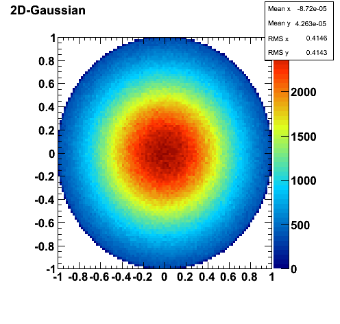
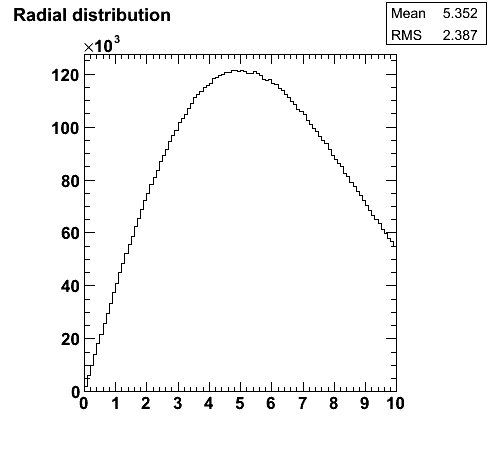
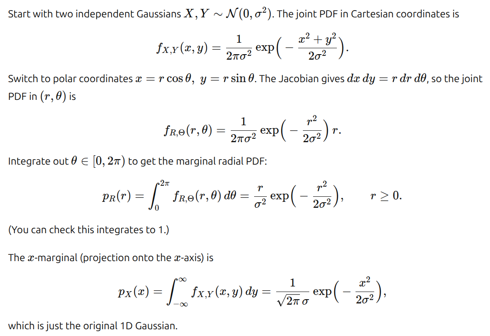
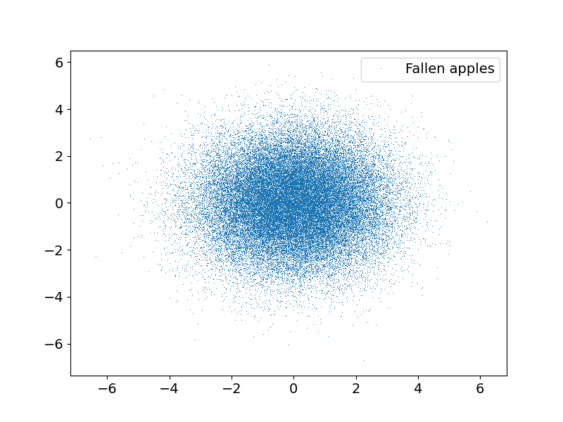
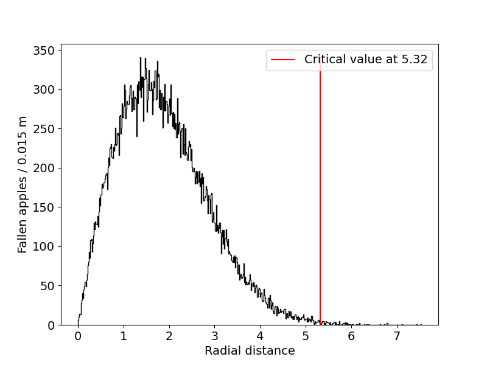

Newton
How far should Newton sit to be safe from a head injury?
Motivation
In fact, we only want to integrate 2D Gauss distribution - but that would not be as fun as to ... imagine sir Isaac Newton sitting in the shade of an apple tree. Suppose the tree is droping its fruit with a Gaussian distribution in both x- and y-axis directions, both with mean value 0 and standard deviation 1.5 m. How far from the tree can he sit to be safe "enough"? Since we are dealing with Gaussian distribution, no distance is perfectly safe. Let's set that enough safe is to sit in the area, where the total probability of falling apple is lower than 0.02 %. - here we do not care how big head Newton has!


Can you understand, why is the probability for radius r different then just for e.g. x coordinate?
Let's prove it:

Analytical solution
We want to integrate the radial distribution from 0 to \(R\) such that the integral is equal to the residual probability \(1 - p = 0.998\).
Inserting our numbers (\(\sigma = 1.5, p = 0.002\)) we arrive at \(R = 5.29\).
Numerical solution
Now let's find this distance using random numbers. We generate 50,000 points with the 2D-Gaussian distribution. Check the distribution of points, it should look like:
Output

Then calculate the radial distances of all of the points and make a histogram.
Output

The task: to fill data to histogram and integrate part of the 2D histogram (everyone should be able to integrate part of 1D histogram)
- Using hist[inside]
- Using np.where()
- Integrate square, circle is easy
- Check if it works same for distance pdf:
TODO: Write the function find_safe_distance() where integrate the histogram from the left until the sum arrives at 99.8 % of our sample. That is where we say Newton is safe to sit.
import numpy as np
import matplotlib.pyplot as plt
from matplotlib.patches import Circle
def main():
# generates 2 random arrays of size 50000 with gaussian distribution of mean value 0, sigma 1.5 and size 500000
N = 50000
p = 0.002
c_p = 0.998
apples = np.random.normal(0, 1.5, [2, N])
#simple_plot([apples[0]], [apples[1]], ['Fallen apples'], None, None, "fallen_apples.png")
xbins = np.linspace(-10, 10, 200)
ybins = np.linspace(-10, 10, 200)
# fill it to 2D histogram
H, xedges, yedges = np.histogram2d(apples[0], apples[1], bins=(xbins, ybins))
# Cell centres
xc = 0.5*(xedges[:-1] + xedges[1:])
yc = 0.5*(yedges[:-1] + yedges[1:])
XX, YY = np.meshgrid(xc, yc, indexing='ij')
# =====================================================
# Integrals inside circles of radius r = 2..10, step 0.1
# =====================================================
r_values = np.arange(2, 10.1, 0.1)
radius_mask = XX**2 + YY**2 # squared distance of each bin centre
print("=== Integral inside circles ===")
for r in r_values:
inside = radius_mask <= r*r # returns true/false for each bin in 2D structure
integral = np.sum(H[inside]) / N # fraction of points inside
print(f"r = {r:4.1f} integral = {integral:.5f}")
if integral > c_p:
print(f"s = {s:4.1f} integral = {integral:.5f}")
break
# =====================================================
# Integrals inside circles - ALTERNATIVE
# =====================================================
print("=== Integral inside circles ===")
for r in r_values:
idx = np.where(XX*XX + YY*YY <= r*r) # returns (i_indices, j_indices)
integral = np.sum(H[idx]) / N # fraction of points inside
print(f"r = {r:4.1f} integral = {integral:.5f}")
if integral > c_p:
print(f"s = {s:4.1f} integral = {integral:.5f}")
break
# =====================================================
# Integrals inside squares of side s = 4..10, step 0.1
# =====================================================
s_values = np.arange(4, 10.1, 0.1)
print("\n=== Integral inside squares ===")
for s in s_values:
half = s/2
inside = (np.abs(XX) <= half) & (np.abs(YY) <= half)
integral = np.sum(H[inside]) / N # fraction of points inside
# print(f"s = {s:4.1f} integral = {integral:.5f}")
if integral > c_p:
print(f"s = {s:4.1f} integral = {integral:.5f}")
break
## ----------------------------
## Let's try it also for 1D radius distribution - does it agree?
# calculates the radial distance of all points from the origin
dist = (apples[0]**2 + apples[1]**2)**0.5
# makes a histogram of those radial distances with 500 bins between minimal and maximal value
hist, edges = np.histogram(dist, bins = 500)
# calculates where the probability of getting hit is less than 0.2 %
safe_zone = find_safe_distance(hist, edges, len(apples[0]), 0.002)
# plots the histogram. the f'...{}' format allows one to execute code inside a string, the result of the code will then be converted to string.
plot_histogram(hist, edges, None, 'Radial distance', f'Fallen apples / {np.round(edges[1] - edges[0], 3)} m', safe_zone, "fallen_apples_hist.png")
def find_safe_distance(hist, edges, size, prob):
#YOUR CODE HERE
def plot_histogram(hist, edges, lbl, xlabel, ylabel, line_pos, filename = None):
plt.rcParams['font.size'] = 14 # change font size
fig, ax = plt.subplots(figsize = [8,6]) # initialize image
# plot histogram from histogram data and bin edge values
ax.stairs(hist, edges, label = lbl, fill = False, color = 'black')
# draw a vertical line where falling apples are unlikely
ax.vlines(x = line_pos, ymin = 0, ymax=np.max(hist), color = 'red', label = f'Critical value at {np.round(line_pos, 2)}')
ax.set_xlabel(xlabel)
ax.set_ylabel(ylabel)
ax.legend()
plt.show()
if filename:
fig.savefig(filename) # save image as png file
# function for plotting several datasets into the same image,
# x and ydata are expected to be lists of arrays.
# If only a single dataset is to be plotted, it must also be inside a list -> dataset = [dataset]
def simple_plot(xdata, ydata, labels, xlabel, ylabel, filename = None, mk = ','):
plt.rcParams['font.size'] = 14 # changes font size
fig, ax = plt.subplots(figsize = [8,6]) # creates a figure and a subplot object
for x, y, l in zip(xdata, ydata, labels): # loop over several arrays at once (cuts when the first array finishes)
# plot with pixel size points (not a histogram) when marker is ','
ax.plot(x, y, label = l, marker = mk, linestyle = 'None')
ax.legend() # includes a legend in the image
ax.set_xlabel(xlabel) # gives a name to the x axis, below analogy for y axis
ax.set_ylabel(ylabel) # matplotlib supports latex like math type-setting
#ax.set_aspect('equal')
plt.show() # displays the current figure
if filename:
fig.savefig(filename) # saves the figure 'fig' as a png file
if __name__ == "__main__":
main()
- Using Graphical Cut object TCutG: define a circle points (rcos(phi), rsin(phi))
- Try to draw 2D histogram differently ROOT Draw Options
//jak daleko musi Newton sedet, aby na nej nespadlo jablko?
void newton(int counts=50000, float sigma=1.5, int bins=100)
{
TDatime dt;
UInt_t curtime = dt.Get();
UInt_t seed = curtime;
TRandom3 *rnd= new TRandom3(seed);
float maxR=0;
TH2D* h2=new TH2D("h2","h2",bins,-6.0,6.0,bins,-6.0,6.0);
for(int i = 0; i<counts; i++)
{
float x=rnd->Gaus(0,sigma);
float y=rnd->Gaus(0,sigma);
float r=TMath::Sqrt(x*x+y*y);
if(r>maxR)maxR=r;
h2->Fill(x,y);
}
h2->Draw("COLZ");
// dont forget underflow / overflow
double i_full = h2->Integral(0,bins+1,0,bins+1);
double part = i_full*0.998;
double i_part = 0.0;
double range = 5.1;
double step = 12./bins;
while(i_part < part){ //here uncomment
// make a "circle"
const Int_t n = 30;
Double_t x[n+1],y[n+1];
Double_t rcut = range;
Double_t dphi = TMath::TwoPi()/n;
for (Int_t i=0;i<n;i++) {
// TODO: CODE HERE:
x[i] = ;
y[i] = ;
}
x[n] = x[0]; y[n] = y[0];
TCutG *mycut = new TCutG("mycut",n+1,x,y);
mycut->SetLineWidth(2);
mycut->Draw("same"); //here comment-out
//h2->Draw("surf1 [mycut]");
//h2->Draw("COLZ [mycut]");
i_part = mycut->IntegralHist(h2);
cout << "Integral %\t" << i_part/i_full << "\t Range \t" << range << endl;
range += step;
} //here uncomment
cout << "Int " << i_full << " i_part" << i_part << endl;
cout<<"max R:"<<maxR<<endl;
} //here uncomment
// TRY v GUI canvasu: SetShowProjectionX/Y